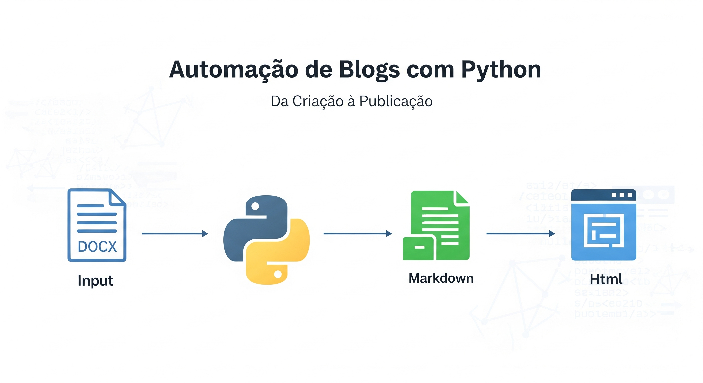

Inovação em Gestão de Conteúdo: Python para Blogs Automatizados
No cenário atual de criação de conteúdo digital, a capacidade de gerar, converter e publicar informações de maneira eficiente tornou-se uma necessidade fundamental. A Cara Core Informática destacou-se neste segmento ao desenvolver uma solução inovadora baseada em Python para automatizar completamente o processo de publicação de blogs pessoais.
O Desafio da Publicação Técnica
Para profissionais técnicos, a criação de conteúdo enfrenta vários desafios:
- Formatos Inconsistentes: Os documentos técnicos são frequentemente criados em diversos formatos (DOCX, TXT, PDF)
- Formatação Manual: Converter conteúdo para HTML/Markdown demanda tempo e conhecimento especÃfico
- Manutenção do Site: Atualizações frequentes exigem retrabalho significativo
- Consistência Visual: Manter padrões de estilo em múltiplos artigos é desafiador
- Escalabilidade: O crescimento do conteúdo torna a gestão manual insustentável
A Cara Core Informática identificou estas dificuldades e criou uma solução elegante baseada inteiramente em Python para automatizar todo o fluxo de trabalho.
Arquitetura do Sistema de Blog Automatizado
A solução desenvolvida pela Cara Core Informática utiliza um pipeline de processamento modular que transforma documentos DOCX em um site completo. O sistema é composto por componentes especializados que funcionam em harmonia:
build_system/
├── core/ # Processamento principal
│ ├── docx_converter.py # Conversão DOCX para Markdown
│ ├── md_to_html.py # Conversão Markdown para HTML
│ └── site_builder.py # Construção do site
├── utils/ # Módulos utilitários
│ ├── file_manager.py # Gerenciamento de arquivos
│ ├── normalizer.py # Normalização de textos
│ └── processed_articles_manager.py # Controle de processamento
└── config/
└── settings.py # Configurações centralizadasPipeline de Transformação de Conteúdo
O sistema implementa um fluxo de trabalho sequencial que transforma documentos de texto em um site dinâmico:
- Extração de Conteúdo: Os documentos DOCX são processados utilizando a biblioteca Pandoc para extrair texto e metadados
- Geração de Markdown: O conteúdo extraÃdo é transformado em Markdown bem-formatado
- Processamento de MÃdia: Imagens e recursos são otimizados e organizados automaticamente
- Conversão para HTML: O Markdown é convertido para HTML com realce de sintaxe para blocos de código
- Aplicação de Templates: O HTML gerado é integrado em templates responsivos com CSS moderno
- Atualização do Ãndice: O sistema atualiza automaticamente o Ãndice principal e as páginas de categoria
Tecnologias Python Implementadas
A solução utiliza diversas tecnologias Python para criar um sistema robusto:
1. Processamento de Documentos
# Trecho do docx_converter.py
def convert_to_markdown(self, docx_file: Path) -> Optional[Path]:
"""
Converte arquivo DOCX para Markdown.
"""
# Comando pandoc com opções otimizadas
command = [
'pandoc',
str(docx_file),
'-f', 'docx',
'-t', 'markdown',
'--extract-media=temp_media',
'-o', str(md_file)
]
try:
logger.info(f"Convertendo: {docx_file.name} → {md_file.name}")
result = subprocess.run(command, capture_output=True, text=True)
if result.returncode == 0:
# Processamento bem-sucedido
self._process_markdown_file(md_file)
return md_file
else:
logger.error(f"Erro no pandoc: {result.stderr}")
return None
except Exception as e:
logger.exception(f"Erro ao converter {docx_file.name}: {str(e)}")
return None2. Geração de HTML Responsivo
# Trecho do md_to_html.py
def convert_markdown_to_html(self, md_file_path: str) -> bool:
"""
Converte arquivo Markdown para HTML com formatação avançada.
"""
try:
md_file = Path(md_file_path)
if not md_file.exists():
logger.error(f"Arquivo Markdown não encontrado: {md_file_path}")
return False
# Carregar conteúdo Markdown
with open(md_file, 'r', encoding='utf-8') as f:
md_content = f.read()
# Extrair metadados e transformar conteúdo
metadata = self._extract_metadata(md_content)
html_content = self._transform_markdown_to_html(md_content)
# Aplicar template HTML
final_html = self._apply_template(html_content, metadata)
# Salvar arquivo HTML
html_file = self._get_html_output_path(md_file)
with open(html_file, 'w', encoding='utf-8') as f:
f.write(final_html)
logger.info(f"HTML gerado com sucesso: {html_file}")
return True
except Exception as e:
logger.exception(f"Erro ao converter para HTML: {str(e)}")
return False3. Sistema de Controle de Processamento
Um dos diferenciais do sistema é o gerenciamento inteligente de conteúdo que evita reprocessamento desnecessário:
- Lista de Controle: Mantém registro de todos os artigos processados
- Verificação de Alterações: Detecta mudanças nos arquivos originais
- Processamento Seletivo: Processa apenas novos conteúdos ou atualizações especÃficas
- Controle de Versão: Integra-se naturalmente com sistemas Git para versionamento
BenefÃcios do Sistema
A implementação deste sistema pela Cara Core Informática trouxe diversos benefÃcios:
- Redução de Tempo: Publicação que levava horas é reduzida para minutos
- Consistência Visual: Todos os artigos mantêm padrão visual profissional
- Facilidade de Uso: Autores podem focar no conteúdo sem preocupações técnicas
- Escalabilidade: Sistema gerencia facilmente centenas de artigos
- Manutenção Simplificada: Atualizações de estilo são aplicadas globalmente
Impacto para Clientes e Usuários
A solução desenvolvida pela Cara Core Informática revolucionou a maneira como profissionais técnicos publicam conteúdo. Usuários relatam:
"O sistema transformou completamente meu fluxo de trabalho. Antes, eu gastava quase um dia inteiro formatando e publicando cada artigo técnico. Agora, escrevo em Word e o sistema faz todo o resto automaticamente."
— Ricardo Souza, Engenheiro de Software
Casos de Uso Reais
O sistema tem sido implementado em diversos cenários:
- Blogs Técnicos Pessoais: Profissionais de TI mantêm blogs atualizados sem conhecimento web
- Documentação Interna: Empresas usam o sistema para manter documentação técnica atualizada
- Publicações Acadêmicas: Pesquisadores publicam artigos cientÃficos de forma padronizada
- Knowledge Bases: Equipes de suporte mantêm bases de conhecimento atualizadas
Evolução ContÃnua do Sistema
A Cara Core Informática continua aprimorando o sistema com novas funcionalidades:
- Análise de SEO: Verificação automática de elementos SEO nos artigos
- Integração com CDNs: Otimização de imagens e distribuição de conteúdo
- Análise de Métricas: Integração com sistemas de analytics
- Automação de Redes Sociais: Publicação automática em plataformas sociais
Conclusão
O sistema de automação de blogs desenvolvido pela Cara Core Informática exemplifica o poder do Python na transformação de processos tradicionais. Ao eliminar tarefas repetitivas e técnicas, a solução permite que profissionais foquem no que realmente importa: a criação de conteúdo de qualidade.
Para empresas e profissionais que buscam otimizar seus processos de publicação de conteúdo, esta solução representa um avanço significativo que combina eficiência, consistência e escalabilidade em uma única plataforma.
O sistema de automação de blogs da Cara Core Informática está disponÃvel como projeto open source. Para mais informações: suporte@caracore.com.br
Hashtags
Contato
- E-mail: suporte@caracore.com.br
- Site: www.caracore.com.br
- LinkedIn: Cara Core Informática
Conecte-se conosco no LinkedIn para mais conteúdos sobre desenvolvimento e inovação tecnológica!
Seguir no LinkedIn